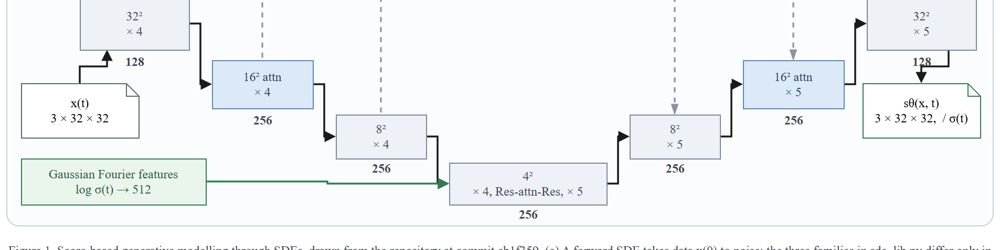
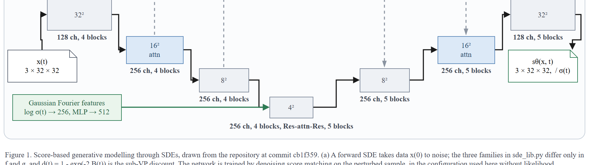
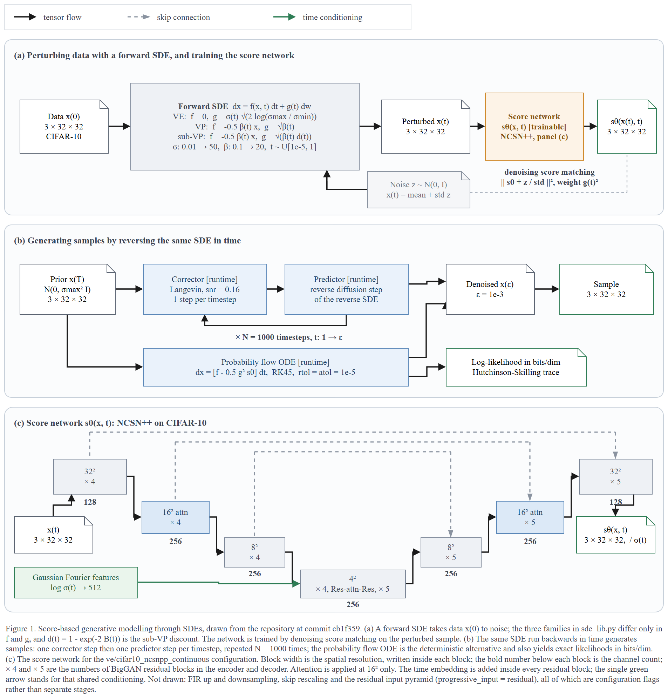
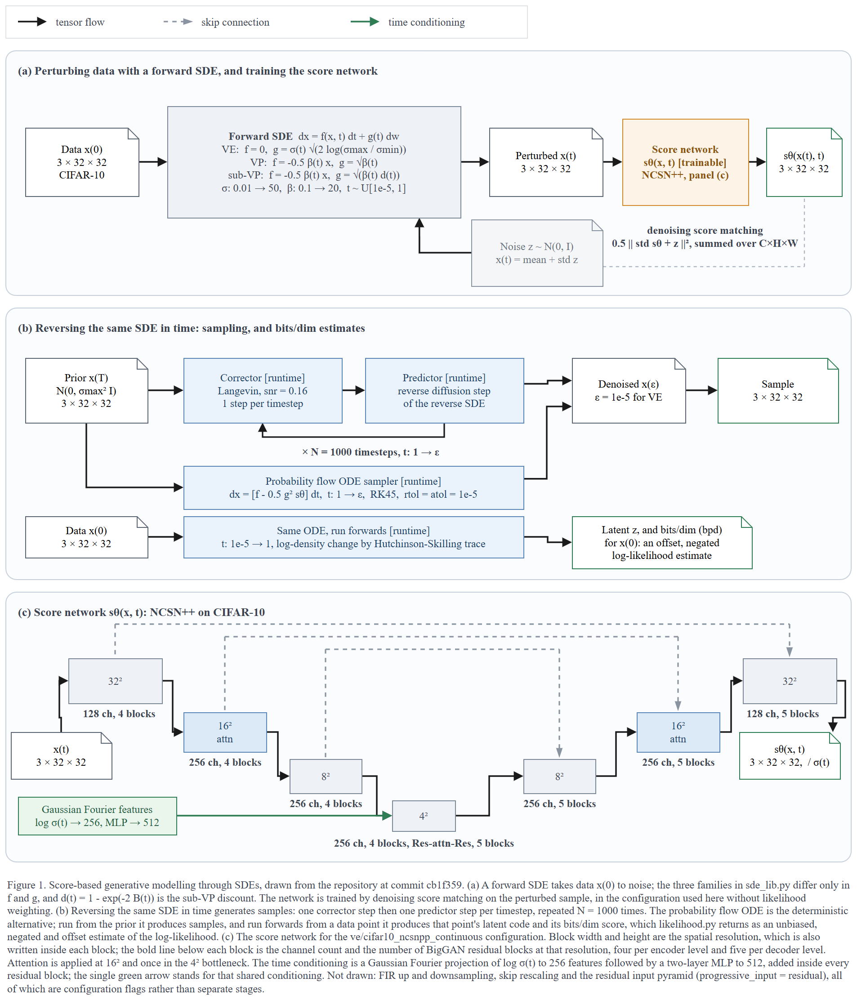
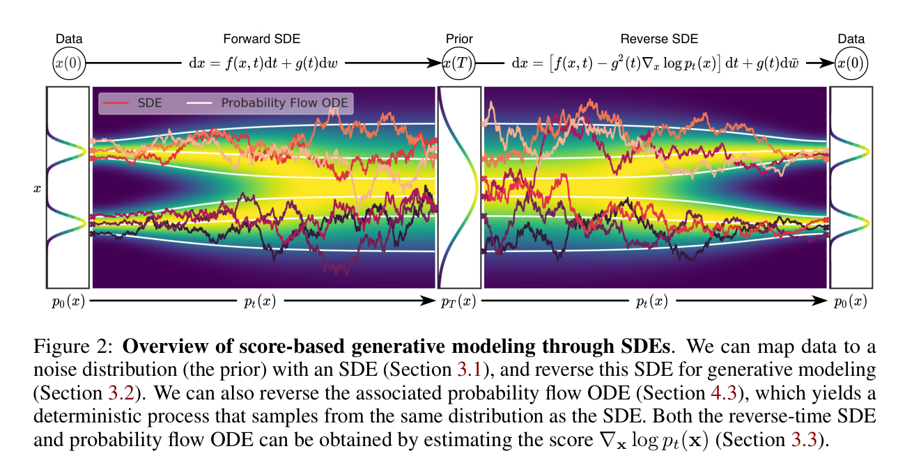

← 전체 목록 · T1M-5 · T1-M
Score-SDE — 스코어 기반 생성모형
스킬 개발에 사용하지 않은 저장소이다. 저장소 코드만 입력으로 사용하였고, 정답지는 실행 종료 후 대조 목적으로만 열었다.
블라인드 조건
- 저장소에 세 세대의 신경망이 한 트리에 있다:
NCSNpp/DDPM/NCSNv2. 무엇을 그릴지는 코드가 정하게 뒀고, 실행은ve/cifar10_ncsnpp_continuous한 설정을 골랐다. - 저자 그림
assets/schematic.jpg·논문·Colab·Diffusers 문서는 열지 않았다. 리포트 기록:The repository's own figure (
assets/schematic.jpg), the linked paper, the Colab notebooks and the Diffusers docs were not opened, per instruction. rev-parse --show-toplevel이 대상 폴더와 일치하는지 먼저 확인한 뒤 캡션에cb1f359를 넣었다.- 정답지는 논문 Figure 2(가로 한 줄, forward/reverse SDE + probability-flow ODE 궤적을
p_t(x)히트맵 위에)이고, 산출물은 코드에서 나온 3패널(훈련·샘플링·NCSN++)이다. 저자 그림을 열지 않았고 구성이 정답지와 다르다.
프롬프트
Scout 신규 세션에 아래 내용만 입력하였다. 무엇을 그릴지는 지정하지 않았다.
/method-figure
C:\Users\youngseolee\OneDrive - Microsoft\Desktop\work\code\paper-trail\eval\demo\repos\scoresde
이 저장소를 읽고 논문 Figure 1~2 자리에 들어갈 방법론 그림을 만들어줘.
지켜야 할 것:
- 이 저장소의 코드에서만 읽는다. 이 방법의 논문이나 저자 그림, 저장소
README 가 링크한 외부 이미지를 찾아보지 않는다. 무엇을 그릴지는 코드가
정한다.
- 산출물은 전부 이 폴더에 쓴다:
C:\Users\youngseolee\OneDrive - Microsoft\Desktop\work\code\paper-trail\out\demo\scoresde\run\
figure.drawio, fig.html, report.md,
evidence.json (evidence.py 가 뽑은 재료 원문),
render.png (최종 그림을 렌더한 PNG),
render-r1.png (독립 시각 게이트를 처음 통과시키기 전 시점의 렌더).
게이트가 한 번에 통과하면 render-r1.png 는 만들지 않아도 된다.
- report.md 에는 돌린 검사의 stdout 을 그대로 붙이고, 게이트마다 통과/실패와
몇 라운드 만에 통과했는지 적는다. 스킬에서 모호했거나 따를 수 없었던 것도
적는다.
실행 경과
캡처 프레임 165장 중 8장을 선별하였다. 좌우 방향키로 이동한다.
게이트 4종 결과
| 게이트 | 결과 | 라운드 | 검출 내용 |
|---|---|---|---|
| ① 렌더 | 통과 | 1 | XML 파싱 + 뷰어 기동 (전용 포트 8931) |
② check_layout.py | ok (엣지 37, 라벨 0) | 3 | 1라운드에 글자 겹침 2건·미검증 커밋 1건·화살표 z-order 1건, 이후 라운드에서 라벨 넘침과 입출력 화살표가 채널 캡션을 가로지르는 것을 검출하였다 |
③ check_render.js | flags: [] | 3 | texts 80 · shapes 29 · edges 48. 라벨을 전부 뽑아 코드 심볼(noise scale·step counts·채널·블록 수)과 대조하였다 |
| ④ 독립 시각 게이트 | GATE: PASS (내용). 남은 GATE: FAIL 은 → 글리프 한 줄뿐 | 6 (스킬 상한 3) | 1차 B6(4² 병목을 8²·16² 보다 넓게)·C2 와 손실 분기·우도 방향 사실 오류, 2차 사실 오류 5건, 3~5차마다 새 사실 오류(합산 축·bpd 부호·Fourier 분할)를 검출하였다 |
기계 검사 셋이 전부
ok·flags: [] 인 그림을 독립 시각 게이트가 다섯 번 떨어뜨렸다(1~5라운드). 심사자에게는 렌더 PNG 와 확대 크롭, 루브릭만 주고 보고서·의도는 주지 않는다. 스킬 상한은 셋이지만 4·5라운드가 매번 새 사실 오류를 잡아서 여섯 라운드까지 갔다.게이트 ④ 반려 후 변경 사항
1라운드에서 떨어진 이유는 B6(4² 병목을 8²·16² 보다 넓게 그려 시각적 중요도가 해상도와 반대)·C2(도형이 공간 차원을 더 담지 못함), 그리고 손실이 잘못된 분기를 그렸고 패널 (b) 우도가 prior 에서 시작한 두 사실 오류였다. 바뀐 자리는 패널 (c) 로, 스코어 망 전체가 재구성됐다.

× 4/× 5, 채널은 128/256 숫자만, × 4, Res-attn-Res, × 5 축약, Fourier log σ(t) → 512 한 단계.
32²→16²→8²→4² 로 단조 축소하고, 밑에 128 ch, 4 blocks 처럼 글자로 풀어 씀(스와치 없는 범례 줄 대신). Fourier 는 log σ(t) → 256, MLP → 512 두 단계로 갈라졌다.

최종 산출물
산출물은 이미지가 아니라 draw.io XML 이다. 확대·이동이 가능하며 내려받아 수정할 수 있다.
figure.drawio · report.md · 뷰어 새 창
정답지 대조

| 항목 | 정답지 | 산출물 | 비고 |
|---|---|---|---|
| 무엇을 그렸나 | 가로 한 줄: Data → Forward SDE → Prior → Reverse SDE → Data, SDE/ODE 두 궤적을 p_t(x) 히트맵 위에 | (a) 훈련 / (b) 샘플링+bits/dim / (c) NCSN++ 3패널 | 정답지는 SDE 궤적 개념도이고, 산출물은 코드 기준 구현 상세다 |
| 스코어 망 | 없음 (히트맵과 궤적만) | NCSN++ U자형 32²→16²→8²→4² 단조 축소 + 채널·블록 수 | 정답지에 아예 없는 것을 코드에서 펼쳤다 (M-P3 자체 패널) |
| 전방 SDE | Forward SDE화살표 하나 | dx = f dt + g dw, VE/VP/sub-VP 세 계수 (sde_lib.py) | 정답지는 종류 하나이고, 산출물은 코드의 세 갈래를 계수까지 담았다 |
| 훈련 손실 | 없음 | 0.5 || std sθ + z ||², C×H×W 합산 | 게이트가 잡은 자리다. g² 가중 분기를 그렸다가 likelihood_weighting=False 무가중 분기로 정정하고 0.5 도 추가하였다 |
| 역방향 / 샘플링 | Reverse SDE+ Probability Flow ODE 궤적 (범례) | corrector → predictor ×1000 루프 + PF-ODE 샘플러 | 둘 다 PF-ODE 를 담았지만 산출물은 PC 루프 N=1000 을 도형으로 담았다 |
| 우도 / bits-dim | 없음 (p_0/p_t/p_T 라벨만) | data → ODE 정방향 → bpd (offset·negated log-likelihood estimate) | 게이트 3·4라운드가 잡은 자리다. prior 시작을 data 시작으로, exact likelihood를 offset·negated bpd 추정으로 바꿨다 |
| 시간 조건 | 없음 | Gaussian Fourier log σ(t) → 256, MLP → 512 | 게이트 5라운드가 → 512한 단계로 합친 것을 projection + MLP 두 단계로 나눴다 |
| 수치 / ε | 없음 | ε = 1e-5 for VE, RK45 rtol = atol = 1e-5 | 게이트 2라운드가 sampling.py 기본인자 1e-3 을 run_lib 의 VE 값 1e-5 로 정정하였다 |